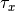

dd_single.py and dd_time.py recognize the following environment variables:
DD_COND: Switch between the resistivity (DD_COND=0, default) and conductivity (DD_COND=1) model formulations. See Theory of SIP models for more information on the formulations.
DD_STARTING_MODEL: Switch between different heuristics to generate the starting models. Valid values are 1 (default), 2, 3
DD_C: (resistivity only) Use a Cole-Cole decomposition with the provided c value. Values larger than 0 and smaller, or equal to, 1 are valid. Default is 1 (the Debye decomposition).
DD_TAU_X: Sets the cumulative relaxation times  which shall be computed. The string separates the requested percentages as fractions with ‘;’ characters.
For example, the following call to dd_single computes the 20%, 35%, and 60% percentiles of the RTD:
DD_TAU_X="0.2;0.35;0.6" dd_single.py
DD_DEBUG_STARTING_PARS: internal parameter
DD_USE_LATEX: Enable the Latex backend. Plot labels will be processed by Latex, producing better plot output. On Windows, this requires a working MiKTex install. On by default on Linux, off by default on Windows.
In Windows batch file (.bat), environment variables are set using the set command:
set VARIABLE=VALUE
For example, to enable the conductivity model, a .bat file could start like this:
set DD_COND=1
dd_single.py ...
Environment variables can be set using the command export:
export DD_COND=1
export DD_STARTING_MODEL=3